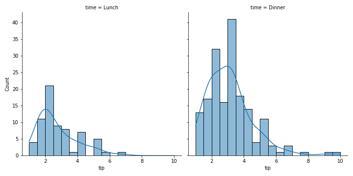

10 - Visualizzazione di dati in Seaborn¶
Seaborn è una libreria che estende Matplotlib aggiungendone diverse funzionalità, tutte nell'ottica della data analysis, e sulla scia di quello che abbiamo presentato in Pandas nella lezione precedente. Ciò permette quindi di mantenere un'interfaccia molto simile a quella di Matplotlib, estendendone al contempo le possibilità. Vediamo qualche esempio.
10.1 - Installazione della libreria¶
Come in ogni altro caso, partiamo dall'installazione della libreria:
Una volta installata, potremo importarla utilizzando un alias:
10.1 - Lettura dei dati¶
Abbiamo detto che Seaborn è utile specialmente nel momento in cui si vogliono valutare visiamente le relazioni che intercorrono tra diverse feature presenti all'interno di un dataset.
In tal senso, proviamo innanzitutto a caricare un insieme di dati, affidandoci al metodo load_dataset(), che estrae uno dei dataset già presenti nella libreria. Ad esempio:
I dataset
L'elenco dei dataset supportati da Seaborn è presente a questo indirizzo.
Ispezionando il tipo di tips possiamo scoprire che si tratta di un dataframe; di conseguenza, possiamo esplorarne liberamente la struttura utilizzando Pandas. In particolare, vediamo che questi sono organizzati secondo la seguente tabella:
>>> tips.head()
total_bill tip sex smoker day time size
0 16.99 1.01 Female No Sun Dinner 2
1 10.34 1.66 Male No Sun Dinner 3
2 21.01 3.50 Male No Sun Dinner 3
3 23.68 3.31 Male No Sun Dinner 2
4 24.59 3.61 Female No Sun Dinner 4
La struttura della tabella è la seguente:
- ogni riga è associata ad una specifica ordinazione;
- le colonne sono associate rispettivamente a conto (
total_bill), mancia (tip), genere (sex), fumatore (smoker), giorno (day), orario (time) e numero di attendenti (size).
10.1.1 - Visualizzare le relazioni tra dati¶
Seaborn ci offre la funzione relplot() che ci permette di analizzare velocemente diversi aspetti inclusi del dataset. Ad esempio, potremmo vedere come cambiano contro e mancia al variare della giornata:
Notiamo che abbiamo passato al parametro data il valore tips, indicando quindi la sorgente dei dati. Metteremo poi sull'asse delle ascisse il conto totale, mentre su quello delle ascisse la mancia ricevuta. In ultimo, il parametro col ci permette di generare tanti grafici quanti sono i diversi valori presenti nella tabella day, ognuno dei quali rappresenterà ovviamente l'andamento dei conti e delle mance per quello specifico giorno.

Un altro esperimento è quello che vede valutare la differenza tra conto e mance pagati da uomini e donne. In questo caso, inoltre, andiamo ad aumentare la dimensione del punto in maniera direttamente proporzionale alla mancia percepita.

Una funzione simile alla relplot() è la lmplot(), che permette anche di mostrare un'approssimazione ai minimi quadrati dei dati. Ad esempio:

10.2 - Analisi della distribuzione dati¶
Possiamo anche effettuare un'analisi della distribuzione delle variabili all'interno del nostro dataset. In tal senso, la funzione displot() ci permette di vedere come si vanno a distribuire i dati in base a determinate condizioni mediante l'uso di un istogramma.
Ad esempio, potremmo visualizzare la distribuzione dei clienti in base al loro genere ed al momento della giornata in cui effettuano la consumazione:

Specificando il parametro kde, è possibile ottenere un'approssimazione della distribuzione mediante kernel density estimation, come mostrato nella figura seguente.

10.3 - Plot di dati categorici¶
Seaborn offre anche dei plot specializzati per la creazione e visualizzazione di dati (o feature) di tipo categorico, ovvero dati appartenenti ad una tra diverse possibili categorie. In tal senso, un esempio di feature categorica è il genere dei clienti del ristorante, che nel dataset sono soltanto uomini o donne.
I plot di questo tipo possono essere generati mediante la funzione catplot(), delegata alla definizione di plot a diversi livelli di granularità, come ad esempio i violin plot.

In particolare, il grafico mostrato in figura descrive la distribuzione delle mance giorno per giorno al variare del genere del cliente.
Catplot con dati non categorici
In realtà, è possibile usare la catplot() con dati non categorici, come numeri interi. Tuttavia, vi è il rischio (o meglio, la certezza) che il risultato sia non interpretabile, in quanto la funzione assegnerà una categoria ad ogni possibile valore assunto dalla feature di riferimento, il che ovviamente comporterà l'illeggibilità del grafico nel caso di valori reali.
10.4 - Heatmap¶
Un'ultima funzione che vale la pena menzionare è quella che ci permette di visualizzare le heatmap, ovvero delle strutture grafiche che ci permettono di visualizzare rapidamente gli intervalli in cui ricadono i valori di diversi tipi di matrici. Questa funzione è, per l'appunto, chiamata heatmap(), e richiede in ingresso almeno il parametro relativo alla matrice da cui sarà estratta la figura. Ad esempio:
ar = np.array([[5, 12], [4, 3]])
sns.heatmap(
ar,
cmap='jet',
annot=True,
xticklabels=False,
yticklabels=False)
Nella precedente invocazione della funzione heatmap() specifichiamo i parametri indicati in modo da passare un array (o similari) come primo argomento, seguito da una colormap, ovvero i colori da utilizzare. Specifichiamo inoltre che vogliamo inserire i valori dell'array su ciascuna delle celle dell'heatmap (mediante il parametro annot) e che non vogliamo visualizzare i label sugli assi \(x\) e \(y\) (xticklabels ed yticklabels rispettivamente). Otterremo questo risultato: